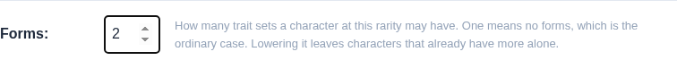
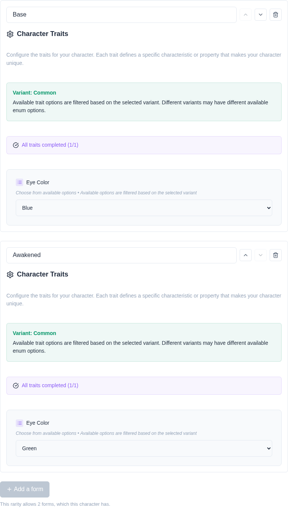
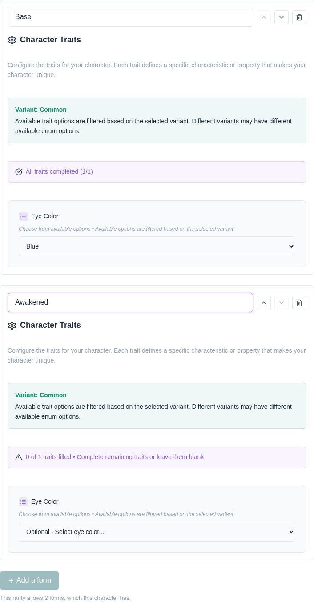
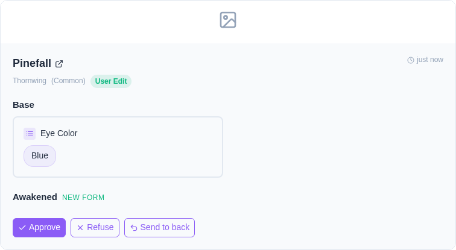
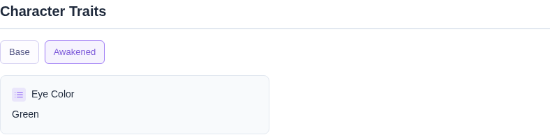
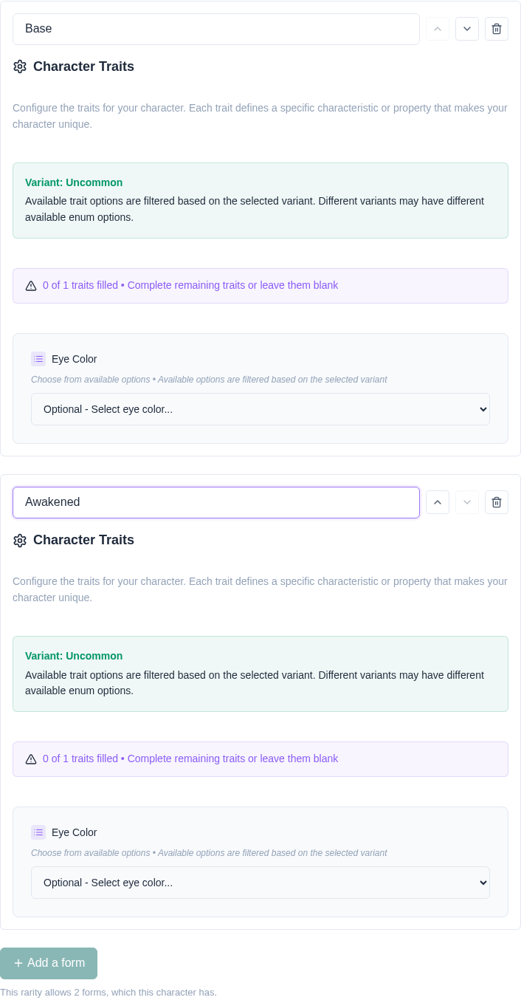
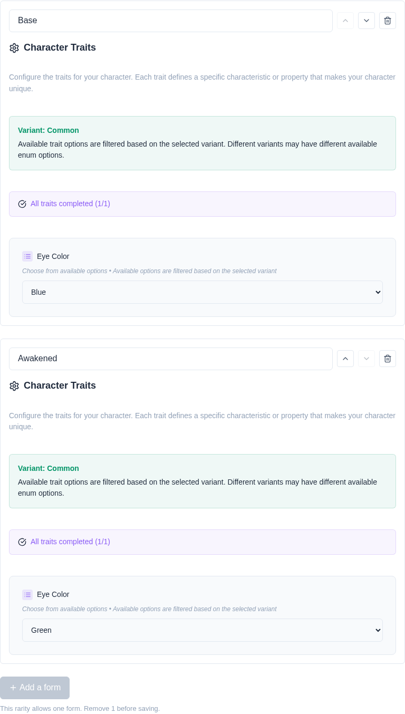
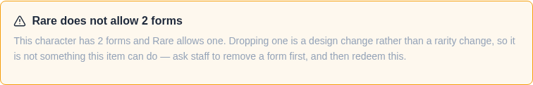

One entry. More than one creature.
Some designs are two creatures. A pillowing with transformation magic looks one way ordinarily and another when it changes — different markings, different colours, sometimes a different silhouette. Until now a character held exactly one trait set, so the second appearance had nowhere to live.
A form is one appearance of a character, with its own trait set. A character can have several, and they all hang off the same masterlist entry: one registry identifier, one owner, one trade state.
Every character has at least one form. Characters that existed before this feature have exactly one, named Base, holding the traits they already had — nothing about them changed.
Forms are off everywhere by default, and a community switches them on for the rarities that should have them. On a variant’s management page, Forms is how many trait sets a character at that rarity may have. One means no forms, which is the ordinary case and what every existing variant starts at.
Putting the setting on the variant rather than the species is deliberate: “our Magic tier transforms and our Common tier does not” is the thing communities actually want to say.
It needs the edit species permission, like the rest of a variant. The limit decides whether a character can carry a second design, so it is not a member’s to raise.

Once a rarity allows more than one, the trait editor on the character’s edit page grows a name field per form and an Add a form button. Each form has its own traits and its own name — “Feral”, “Awakened”, whatever the community calls it — and can be reordered with the arrows or removed with the bin.
The first form in the list is the primary one. It is what a listing shows and what somebody following a link to the character lands on, so reordering is a real change rather than a cosmetic one.
On a rarity that allows only one form, none of this appears. The editor is the bare trait form it always was, so a community that never uses transformations never sees the feature.

Adding a form is a trait change, and it takes whatever route trait changes already take. Nothing new was invented for it, and nothing was loosened.
The kit’s page is the same editor, so proposing a second form is the same three clicks. What differs is what happens next: nothing is applied. The proposal lives in the review queue until staff sign it off, and the new form does not exist until then.

A review covers the whole character rather than one form. One save can add a form and edit another — that is one action to the member — so the queue shows every form the character would end up with, diffed one at a time.
A form being added is marked New form, and one being removed Form removed, so a reviewer can tell “this adds a design” from “this recolours an existing one” at a glance. A review of an ordinary single-form character reads exactly as it did before forms existed.
Approving applies every form at once. Refusing applies none of them and hands the kit back — the character keeps the forms it already had, because a proposed form never existed to revert to.

A character with more than one form gets a row of tabs above its traits. A character with one gets no tabs at all, and reads exactly as it did before.

A character created from an MYO ticket can be born with both forms. The ticket names the rarity, so the same limit applies: pick a variant the ticket allows, and the forms editor appears with its allowance.
The character still arrives in the review queue, as every MYO does. Staff see both forms.

Lowering a variant’s Forms number does not trim characters that already have more. Staff changing a number should not silently delete a design nobody reviewed the removal of, so the new limit applies at the next save instead.
Whoever edits that character next is told which form to remove before the save will go through. Until then the character keeps every form it has, and its page shows every tab.

A rarity is an allow-list, and changing one can strand values the destination does not permit. With forms, every form is checked and the re-routing panel names which form each stranded value is in.
The form count is checked too. Staff moving a two-form character to a rarity that allows one say which form it keeps, by submitting that one.

| Not this | Why |
|---|---|
| A form with its own rarity | Rarity is what upgrade tickets sell, so a character with two of them has no answer to “what is this worth”. All of a character’s forms share its rarity. |
| A form with its own registry identifier | The identifier names the masterlist entry, and forms are one entry. |
| A form traded on its own | Same reason. If a community wants two separately tradeable things, those are two characters. |
| A form with its own image | Not yet. All of a character’s media is shared for now; per-form imagery is a follow-up. |
| A character with no forms | Removing the last one is refused. That is not “no traits”, it is a character that cannot be rendered. |
| Forms on a character with no species | A character out of its species has no trait list, so a second form would be a second set of nothing. Removing a character from its species flattens every form’s traits into its custom fields, naming each form, and leaves one empty form behind. |